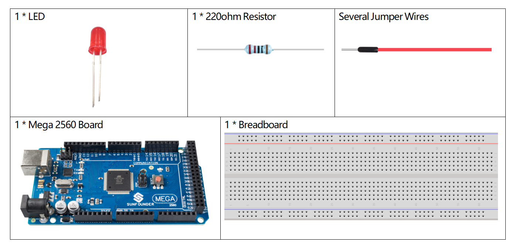

1.11 Intervall¶
Überblick¶
Manchmal müssen Sie zwei Dinge gleichzeitig tun. Beispielsweise möchten Sie möglicherweise eine LED blinken lassen, während Sie einen Tastendruck lesen. In diesem Fall können Sie Verzögerung () nicht verwenden, da Arduino Ihr Programm während der Verzögerung () anhält. Wenn die Taste gedrückt wird, während Arduino angehalten ist und auf die Verzögerung () wartet, wird Ihr Programm den Tastendruck verpassen.
Diese Skizze zeigt, wie Sie eine LED ohne Verzögerung blinken lassen (). Es schaltet die LED ein und notiert dann die Uhrzeit. Anschließend wird jedes Mal durch loop () überprüft, ob die gewünschte Blinkzeit abgelaufen ist. Wenn dies der Fall ist, wird die LED ein- oder ausgeschaltet und die neue Uhrzeit notiert. Auf diese Weise blinkt die LED kontinuierlich, während die Skizzenausführung niemals bei einer einzelnen Anweisung zurückbleibt.
Eine Analogie wäre, eine Pizza in Ihrer Mikrowelle aufzuwärmen und auch auf eine wichtige E-Mail zu warten. Sie stellen die Pizza in die Mikrowelle und stellen sie für 10 Minuten ein. Die Analogie zur Verwendung von Verzögerung () besteht darin, vor der Mikrowelle zu sitzen und zu beobachten, wie der Timer von 10 Minuten bis zum Nullpunkt herunterzählt. Wenn die wichtige E-Mail während dieser Zeit eintrifft, werden Sie sie vermissen.
Im wirklichen Leben brauchen Sie nur die Pizza einschalten, Ihre E-Mails abrufen und dann andere Dinge tun (es wird nicht zu lange dauern!), Und ab und zu gehen Sie zurück in die Mikrowelle, um sie auszuchecken Wenn der Timer Null erreicht hat, ist Ihre Pizza fertig.
Erforderliche Komponenten¶
Bemerkung
Informationen zur Hardware finden Sie in Teil 2.
Fritzing Circuit¶
In diesem Beispiel verwenden wir den digitalen Pin 9, um die LED anzusteuern, und befestigen eine Seite des Widerstands an den entsprechenden digitalen Pins. Der längere LED-Pin (eine positive Elektrode, die als Anode bezeichnet wird) ist mit der anderen Seite des Widerstands verbunden. Der kürzere Stift (eine negative Elektrode, als Kathode bezeichnet) der LED ist an GND angeschlossen.
Schematische Darstellung¶
Code¶
Wenn Sie mit dem Hochladen der Codes auf die Mega2560-Karte fertig sind, sehen Sie das Hochladen der LED.
Code-Analyse¶
Deklarieren Sie den digitalen Pin 9 als LEDPin.
const int ledPin = 9;
Setzen Sie den Status von ledState auf LOW, um die LED auszuschalten.
int ledState = LOW;
Initialisieren Sie eine Variable mit dem Namen previousMillis, um die vorherige Betriebszeit des Mikrocontrollers zu speichern.
unsigned long previousMillis = 0;
Stellen Sie die Intervallzeit auf 1000 ms (Millisekunden) ein.
const long interval = 1000;
Stellen Sie ledPin auf den OUTPUT-Modus.
pinMode(ledPin, OUTPUT);
Deklarieren Sie in loop () currentMillis, um die aktuelle Zeit zu speichern.
unsigned long currentMillis = millis();
Wenn das Intervall zwischen der aktuellen Betriebszeit und der letzten Aktualisierungszeit größer als 1000 ms ist, werden bestimmte Funktionen ausgelöst. Aktualisieren Sie in der Zwischenzeit die vorherige Millis auf die aktuelle Zeit für die nächste Auslösung, die 1 Sekunde später erfolgen soll.
if (currentMillis - previousMillis >= interval) {
previousMillis = currentMillis;// save the last time you blinked the LED
//...
}
Hier sollen bestimmte in Intervallen ausgeführte Funktionen den Zustand der LED ändern.
if (ledState == LOW)
{ledState = HIGH;}
else
{ledState = LOW;}
digitalWrite(ledPin, ledState);
Phänomen Bild¶